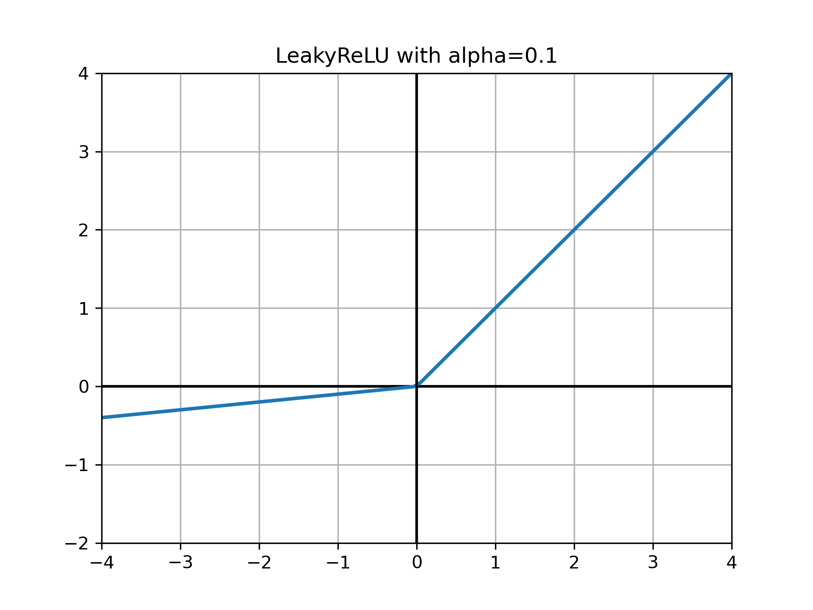

激活函数¶
Note
激活函数负责将非线性特性加入到我们的神经网络中
对于深层网络，梯度消失和梯度爆炸是常见的问题
选择合适的激活函数可以抑制梯度消失和梯度爆炸，加速训练
梯度消失和梯度爆炸¶
反向传播中梯度的递推公式：
\[\frac{\partial L}{\partial \mathbf{z}^{[l]}} = (\mathbf{W}^{[l+1]})^{T}\frac{\partial L}{\partial \mathbf{z}^{[l+1]}} \odot {g^{[l]}}'(\mathbf{z}^{[l]})\]
梯度是层层相乘的关系。
若相乘系数的绝对值普遍小于1，那么很多层之后便会出现梯度消失
若相乘系数的绝对值普遍大于1，那么很多层之后便会出现梯度爆炸
上面的公式中会乘以激活函数的导数，因此激活函数的导数的绝对值不能过小或者过大。
常见的激活函数¶
{kind=link}
{kind=link}
ReLU¶
可以抑制梯度消失和梯度爆炸，梯度也很容易计算，是现在的default
\[\begin{split}
\mbox{ReLU}(x) =
\begin{cases}
x\quad&\text{if}\ {x > 0}\\
0&\text{if}\ {x\le0}
\end{cases}
\end{split}\]

LeakyReLU¶
ReLU的变种
\[\begin{split}
\mbox{LeakyReLU} =
\begin{cases}
x\quad&\text{if}\ {x > 0}\\
\alpha{x}&\text{if}\ {x\le0}
\end{cases}
\end{split}\]

{kind=link}
PReLU¶
带参数的ReLU，它将LeackyReLU中的超参数 \(\alpha\) 变成了一个可以学习的参数 \(\theta\)
\[\begin{split}
\text{PReLU}_{\theta}(x) =
\begin{cases}
x\quad&\text{if}\ {x > 0}\\
\theta{x}&\text{if}\ {x\le0}
\end{cases}
\end{split}\]
{kind=link}
In Pytorch¶
from torch import nn
nn.Sigmoid()
nn.Tanh()
nn.ReLU()
nn.LeakyReLU(negative_slope=0.02)
nn.PReLU()
nn.ELU(alpha=0.5)
ELU(alpha=0.5)